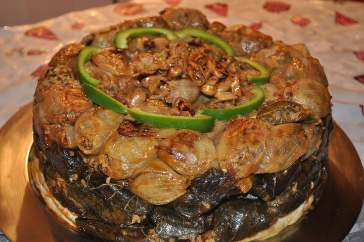

Dolma

Description
Dolma is a group of "stuffed" dishes that is associated with the Ottoman cuisine and countries
such as Iraq, Iran,
Syria, Jordan, Turkey, and Egypt that were in the Ottoman empire.
Dolma dishes are made by wrapping cabbage and other leaves around the filling, and by stuffing the filling
inside
vegetables such as tomatoes. The filling can consist of rice, chicken, beans, and chopped
onions.
Ingredients
- 1 tablespoon olive oil
- 2 onions, minced
- 1 ½ cups uncooked white rice
- 2 tablespoons tomato paste
- 2 tablespoons dried currants
- 2 tablespoons pine nuts
- 1 tablespoon ground cinnamon
- 1 tablespoon dried mint
- 1 tablespoon dried dill weed
- 1 teaspoon ground allspice
- 1 teaspoon ground cumin
- 1 (8 ounce) jar grape leaves, drained and rinsed
Steps
- Heat oil in a medium saucepan over medium heat. Saute onions until tender. Stir in rice and hot water to
cover.
Cover and simmer until rice is half cooked, about 10 minutes.
- Remove from heat and stir in tomato paste, currants, pine nuts, cinnamon, mint leaves, dill weed, allspice
and cumin.
Let mixture cool.
- Prepare a large pot by placing an inverted plate on the bottom; this protects the dolmas from direct heat
when steaming.
- Rinse grape leaves in warm water; drain and cut off any stems. Place about 1 teaspoon of the cooled rice
mixture in the
center of a leaf. Fold in the sides and then roll into a cigar shape. Place in prepared pot. Repeat with
remaining ingredients.
- Pour in just enough warm water to reach the bottom of the first layer of dolmas. Cover and simmer over low
heat for
30 to 45 minutes, or until rice is totally cooked. Check the water level often and add more as
necessary.